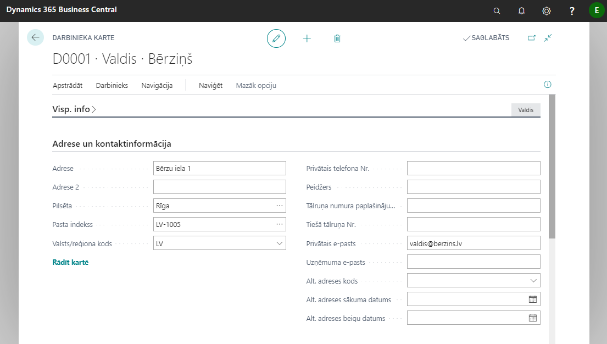
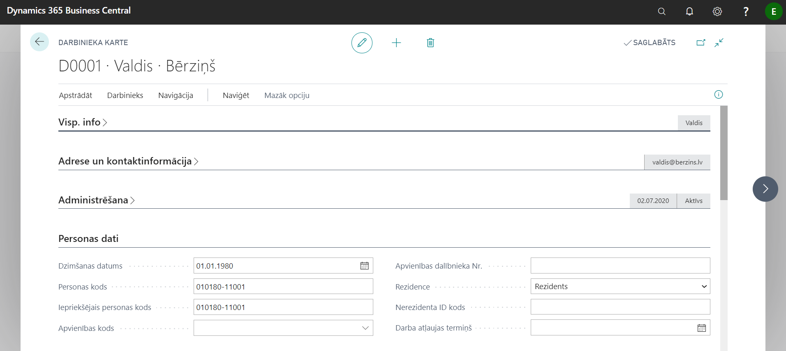
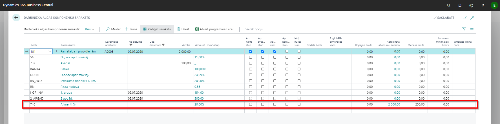

Darbinieku kartiņa
Obligāti aizpildāmie lauki apraksta tabulu kolonnā Lauka tips ir atzīmēti ar izsaukuma zīmi "!".
Cilne: Visp. info
| Lauka nosaukums | Lauka tips | Apraksts |
|---|---|---|
| Nr | ! | Aizpildās automātiski. |
| Vārds | ! | Darbinieka vārds. |
| Otrais vārds/Iniciāļi | Darbinieka otrs vārds vai iniciāļi. | |
| Uzvārds | ! | Darbinieka uzvārds. |
| Meklēšanas nosacījumi | Aizpildās automātiski. | |
| Dzimums | ! | Darbinieka dzimums. |
| Uzņēmuma tālruņa Nr. | Brīvi aizpildāms lauks informācijai. | |
| Uzņēmuma e-pasts | Brīvi aizpildāms lauks informācijai. | |
| Pēdējās modifikācijas datums | Informatīvs lauks, paredzēts darbiniekam izmaksāto summu kontrolei. | |
| Bloķēts privātuma dēļ | Tiek aizpildīts gadījumā, ja darbinieks uzrakstījis iesniegumu bloķēt informāciju par viņu. Tādā gadījumā šis darbinieks netiek atspoguļots atbilstošos sarakstos. | |
| Izmaksu summa | Informatīvs lauks, paredzēts darbiniekam izmaksāto summu kontrolei. | |
| Izmaksu summa pirms storno | Informatīvs lauks. | |
| Maksājumu summa | Informatīvs lauks, paredzēts darbiniekam izmaksāto summu kontrolei. | |
| Atlikusī maksājumu summa | Informatīvs lauks, paredzēts darbiniekam izmaksāto summu kontrolei. | |
| Nav atļauts apsveikt | Tiek aizpildīts gadījumā, ja darbinieks pēc GDPR negribētu afišēt savu dzimšanas dienu. |
Cilne: Adrese un kontaktinformācija
Šajā cilnē norāda adreses, telefona numurus, e-pasta adreses un alternatīvās adreses. Alternatīvo adrešu skaits var būt neierobežots. Lauki ir aizpildāmi pēc vajadzības. Ja lietotājs vēlas, lai darbiniekam tiek sūtītas algu lapiņas uz e-pasta adresi, tad lauks Privātais e-pasts ir jāaizpilda obligāti.

Katram darbiniekam var ievadīt neierobežotu alternatīvo adrešu skaitu. Šim nolūkam sarakstā Alternatīvās adreses ir jāievada kods un tam atbilstošā kontaktinformācija. Tālāk kādu no Alternatīvās adreses kodiem var ievadīt šim nolūkam paredzētajā laukā darbinieka kartiņas cilnē Adrese un kontakts.
Cilne: Administrēšana

| Lauka nosaukums | Lauka tips | Apraksts |
|---|---|---|
| Darbā pieņemšanas datums | ! | Ja Algu uzstādījumu cilnē Atskaites ir ieslēgta funkcija Ziņu koda pārbaudes iesl., tad aizpildot šo lauku, sistēma piedāvās ievadīt darbinieka ziņu kodu EDS iesniedzamam paziņojumam Ziņas par darba ņēmējiem. Atkārtoti šo logu var atvērt klikšķinot rīkjoslā uz pogām Naviģēt - Papaildus inform. algām - Ziņu kodi |
| Statuss | ! | Aktīvs, Neaktīvs, Izbeigts. Pēc noklusējuma aizpildās Aktīvs. |
| Neaktivitātes datums | Norāda datumu, kad darbinieks kļuvis neaktīvs, piemēram, bērna kopšanas atvaļinājums. | |
| Neaktivitātes iemesla kods | Darbinieka neaktivitātes iemesla kods. | |
| Līguma izbeigšanas datums | ! | Obligāts lauks atbrīvojot darbinieku. |
| Izbeigšanas iemesla kods | Norāda darba izbeigšanas kodu pārtraucot darba attiecības. | |
| Darba līguma kods | Norāda ar darbinieku saistīto darba līguma kodu. | |
| Resursa Nr. | Norāda darbinieka resursa numuru. | |
| Pārdevēja/iepircēja kods | Norāda kodu, kas piešķirts darbiniekam, kas ir pārdevējs vai iepircējs. |
Cilne: Personas dati

| Lauka nosaukums | Lauka tips | Apraksts |
|---|---|---|
| Dzimšanas datums | ! | Norāda darbinieka dzimšanas datumu. |
| Personas kods | ! | Nerezidenta gadījumā LR piešķirtais NMR kods. Gadījumā, ja personas kods sākas ar 32, dzimšanas datums netiks aizpildīts. |
| Iepriekšējais personas kods | ! | Gadījumā, ja laukā Personas kods ir ievadīts jauns personas kods, iepriekšējais personas kods tiks automātiski pārkopēts laukā Iepriekšējais personas kods. Jāpievērš uzmanība, lai iepriekšējais personas kods būtu pārkopēts laukā Iepriekšējais personas kods, laukam Iepriekšējais personas kods jābūt tukšam. |
| Apvienības kods | Ja darbinieks ir iestājies kādā apvienībā. | |
| Apvienības dalībnieka Nr. | Obligāts lauks atbrīvojot darbinieku. | |
| Rezidence | ! | Pēc noklusējuma aizpildās Rezidents. Gadījumā ja ir izvēlēta opcija Nerezidents, tad VSAOI atskaitē nerezidentiem netiks aizpildīts IIN. |
| Nerezidenta ID kods | Norāda nerezidentam piešķirto personas identifikācijas kodu. | |
| Darba atļaujas termiņš | Norāda datumu, līdz kuram derīga ir darba atļauja. |
Cilne: Maksājumi

| Lauka nosaukums | Lauka tips | Apraksts |
|---|---|---|
| Darbinieka kontējuma grupa | ! | Izvēlas darbinieka kontējuma grupu no saraksta. |
| Attiecināšanas metode | Norādīt veidu, kā piemērot maksājumus šim darbiniekam. | |
| Bankas nodaļas kods | Norāda darbinieka algas konta bankas filiāles nosaukumu. | |
| Bankas konta Nr. | Norāda darbinieka bankas kontu, uz kuru jāveic algas maksājums. | |
| IBAN | ! | Darbinieka bankas konta starptautiskais kods, uz kuru ir jāveic algas maksājums.** |
| SWIFT kods | ! | Bankas SWIFT kods. |
Cilne: Algas

| Lauka nosaukums | Lauka tips | Apraksts |
|---|---|---|
| Soc. statusa kods | ! | Izvēlas no saraksta darbinieka statusa kodu. |
| Uzņēmuma līgums | Norāda, vai darbinieks strādā pamatojoties uz uzņēmuma līguma. | |
| Autoratlīdzības | Norāda, vai darbinieks saņem autoratlīdzību. | |
| Pārbaudes laika periods | Norāda pārbaudes laika ilgumu, piemēram, 3M. | |
| Pārbaudes laika beigas | Vērtība ielasās automātiski, vadoties pēc darbā pieņemšanas datuma un norādītā pārbaudes laika perioda ilguma. | |
| Uzkr.(-)/izņ.(+) atvaļ. dienas | Šis lauks tiek izmantots uzkrātā atvaļinājuma dienu atlikuma ievadei. | |
| Vidējā samaksa par stundu | Ja aprēķins ir veicams ņemot vērā stundas. | |
| Nerezidenta ienākumu veids | Norāda, ja darbinieks ir nerezidents. |
Cilne: Darbinieka amati
Būtiska darbinieka kartiņas daļa!
Šajā cilnē tiek norādīti tādi aprēķinam vajadzīgie parametri kā darba laika kalendārs, amatā pieņemšanas datums, amata nosaukums.
Lai darbiniekam piešķirtu amatu, klikšķiniet uz pogām Naviģēt ( ) - Papildus inf. izveidošana (
) - Papildus inf. izveidošana ( ) - Izveidot jaunu darbinieka amatu (
) - Izveidot jaunu darbinieka amatu ( ).
).

Atvērsies jauns logs Darbinieka amata karte.

| Lauka nosaukums | Lauka tips | Apraksts |
|---|---|---|
| Nr. | Darbinieka amata numerācija nepieciešama, lai programma varētu pareizi aprēķināt algu gadījumā, ja darbiniekam mainījies amats. Amata maiņas gadījumā jaunajam amatam automātiski tiek piešķirts jauns Darbinieka amata numurs. | |
| Darbinieka Nr. | Izvēlas darbinieku no saraksta. | |
| No datuma | Amats stājas spēkā ar noteiktu datumu, kuru norāda laukā Spēkā no. Pirmajam darbinieka amatam šis lauks pēc noklusējuma tiek aizpildīts ar darbā pieņemšanas datumu. | |
| Līdz datumam | Norāda, ja amatam ir zināms beigu termiņš. | |
| Plānotais spēkā līdz datums | Norāda, ja amatam ir plānots beigu termiņš. | |
| Amata vietas kods | ! | Izvēlas darbinieka amatu no amatu saraksta. |
| Amata nosaukums | ! | Nosaukums ielasās automātiski no izvēlētās amata kartiņas. |
| Struktūrvienības kods | ! | Izvēlas darbinieka struktūrvienību. |
| Galvenais amats | Ja darbiniekam ir vairāki amati, tad starp visiem amatiem ir jānorāda galvenais. | |
| Neiekļaut algu sarakstā | Darbinieka atlaišanas gadījumā šis lauks tiek atzīmēts automātiski, tiklīdz ir izveidots pēdējais algu saraksts. | |
| Algas tips | ! | Norāda darbinieka darba algas aprēķina tipu (piem., summētais darba laiks, maiņu darbs, 5 dienu darba nedēļa). |
| Slodze | Paredzēts statistisko atskaišu veidošanai. | |
| Kalendāra kods | ! | Izvēlas no darba laika kalendāru saraksta. Kalendārs ir visu aprēķinu pamats. |
| Kalendāra nosaukums | Kalendāra kods ielasās automātiski no Kalendāru saraksta. | |
| Cikla kalendārs | Parādās informācija par cikla kalendāru, ja tāds tika izvēlēts Kalendāra kods lauciņā. | |
| Nelietot noklus. atvaļ. kal | Nelietot noklusēto atvaļinājuma kalendāru. | |
| Profesijas kods | Tiek izvēlēts atbilstošs kods no profesijas kodu klasifikatora. | |
| Darba laiks nav nosakāms | Norāda, ja par darba izpildi nav iespējams noteikt faktiski nostrādātās stundas. | |
| 1. globālās dimensijas kods | Ja nepieciešams, norāda 1. globālo dimensiju. | |
| 2. globālās dimensijas kods | Ja nepieciešams, norāda 2. globālo dimensiju. |
Nepieciešamības gadījumā Darbinieku amata kartiņā ir iespējams arī piešķirt dimensijas apskatītajam darbinieka amatam.
Algas komponentes
Darba algas komponentēs norāda nodokļu, atvieglojumu un atvilkumu komponentes, kuras jāiekļauj darbinieka darba algas aprēķinā.
Darbinieka algas komponentes var apskatīt klikšķinot rīkjoslā uz pogām Apstrādāt - Darbinieka algas komponentes.
Izveidojot jaunu darbinieka kartiņu, pirmo reizi algu komponentes ir jāģenerē automātiski. Lai to izdarītu, rīkjoslā jānoklikšķina uz pogām Naviģēt () - Papildus inf. izveidošana () - Izveidot noklusētās darbinieka algas komponentes ().

Algas komponentes ir vieta, kur ir jānorāda pamatalgas komponente, kā arī citas regulāru papildus ienākumu komponentes (piemaksas, prēmijas, bonusus u.tml., kas ir konstantas summas katru mēnesi ilgstošu laika periodu). Izmaksājamo avansa summu norāda avansa komponentē. Nepieciešamības gadījumā rindas papildina ar informāciju par atvieglojumiem - Apgādājamie, Invaliditāte, Represētais.
Tip
Gadījumā, ja darbinieks iesniedzis nodokļu grāmatiņu darba devējam, jāaizpilda katalogs Saistīta informācija, ko var atrast rīkjoslā klikšķinot uz Naviģēt -Papildus info algu aprēķinam.
Komponentēs norāda arī informāciju par ilgstošiem Atvilkumiem (izpildraksti, alimenti, par auto lietošanu, u.tml.). Atvilkumus darbinieku kartiņā atzīmē tikai tajos gadījumos, kad tie ir konstantas summas, kas atkārtojas katru mēnesi. Vienreizēji ieturami atvilkumi reģistrējami Komponenšu reģistrs.
Izpildrakstu apstrāde
Izpildraksts ir jāreģistrē darbinieka kartes sadaļā Algas komponentes

Konkrētajā piemērā ir ieturēti 20 % no bāzes ALIM (alga pēc nodokļu ieturēšanas) izmantojot algas komponenti Nr.740, kur minimālais ieturējums 250 EUR mēnesī, un par iepriekšējiem periodiem ir veikti ieturējumi 2000 EUR apmērā. Ieturējumam limita nav.
Lai iestatītu izpildraksta ieturējumu, jāaizpilda sekojoši lauki:
| Lauka nosaukums | Apraksts |
|---|---|
| Kods | Izvēlēties algas komponenti. Atkarībā no algas komponentes uzstādījumiem tiek aprēķināta ieturējuma summa. |
| No datuma/ Līdz datumam | Ja zināms, norādiet datumus, kādā periodā jāveic ieturējums. |
| Vērtība | Aizpilda gadījumā, ja ir zināma konkrēta summa, kas tiks ieturēta katru mēnesi. |
| Kopējais limits | Norāda kopējo parāda summu pēc izpildraksta. |
| Aprēķinātā summa | Informatīvs lauks. Sistēma šeit atspoguļo kopējo ieturēto summa šim konkrētajam izpildrakstam (no visiem algu sarakstiem kopējā summa). |
| Mēneša limits | Norāda mēneša minimālo limitu. |
| Izmaksas minimālais limits | Norāda darbinieka algas izmaksas minimālo limitu. Šajā gadījumā obligāti jābūt aizpildītai izmaksas bāzei. |
| Izmaksas limita bāze | Norāda limita bāzi, ja ir norādīts izmaksas minimālais limits. |
Iespējamie konfigurācijas varianti:
- Tiek ieturēti 30% no darbiniekam izmaksājamās, bet ne vairāk kā 350 EUR mēnesī. Kopējā ieturamā summa 350 EUR. Parādīts, ka no darbinieka ir jau ieturēta maksimālā summa 350.00 EUR.
- Tiek ieturēti 20%, pie nosacījuma, ka ir jānodrošina darbinieka algas izmaksas summa vismaz 370 EUR mēnesī. Kopējā ieturamā summa 350 EUR. Parādīts, ka no darbinieka ir ieturēts 36.00 EUR.
Tip
Sistēma nenodrošina abus variantus vienlaicīgi - kad tiek lietots Mēneša limits un Izmaksas minimālais limits!